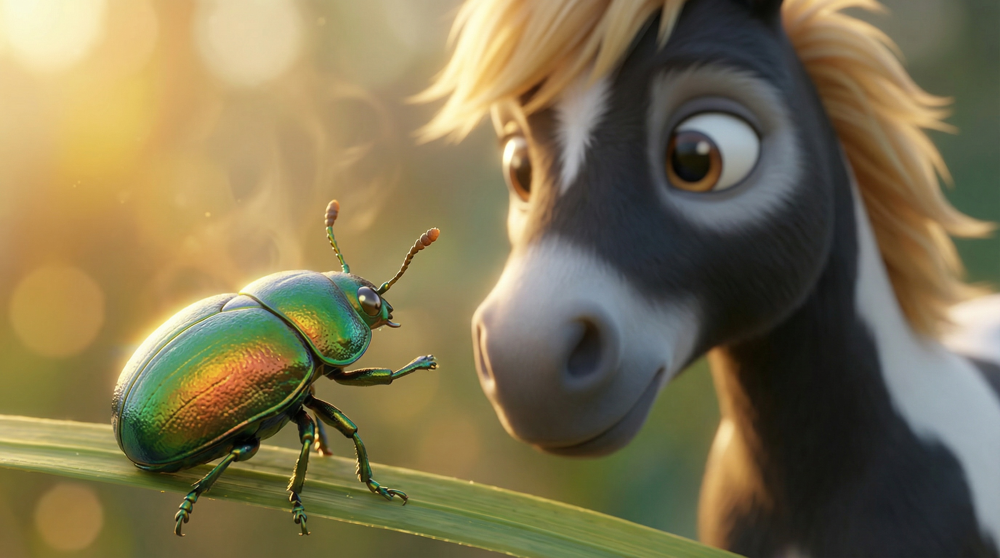

The final phase of the toolkit brings everything together. Banjo learns how his internal calm and sensory awareness help him build deep connections with others.
Children discover that "noticing the small things" helps our own worries disappear and allows us to see how we can help a friend in need.